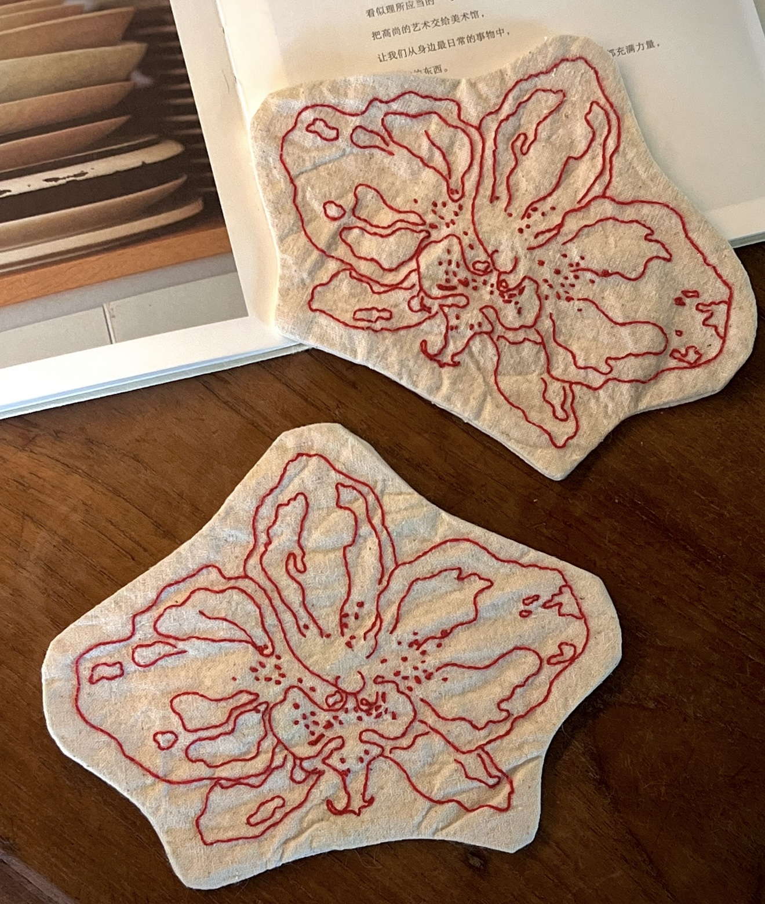
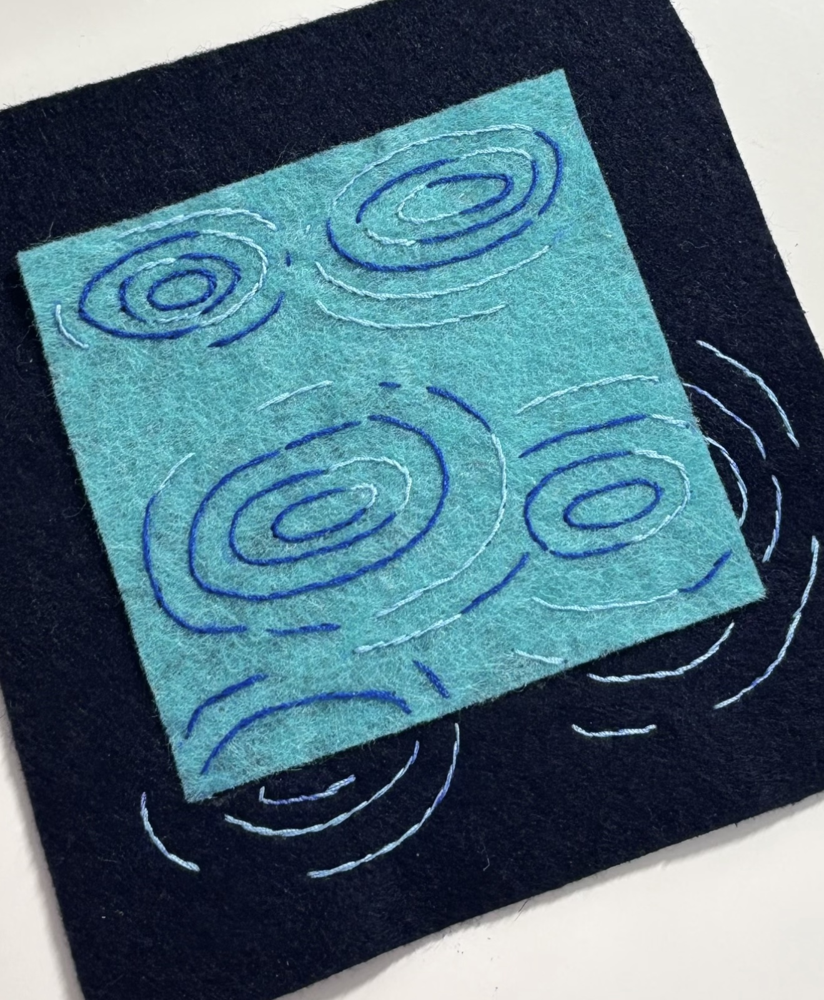
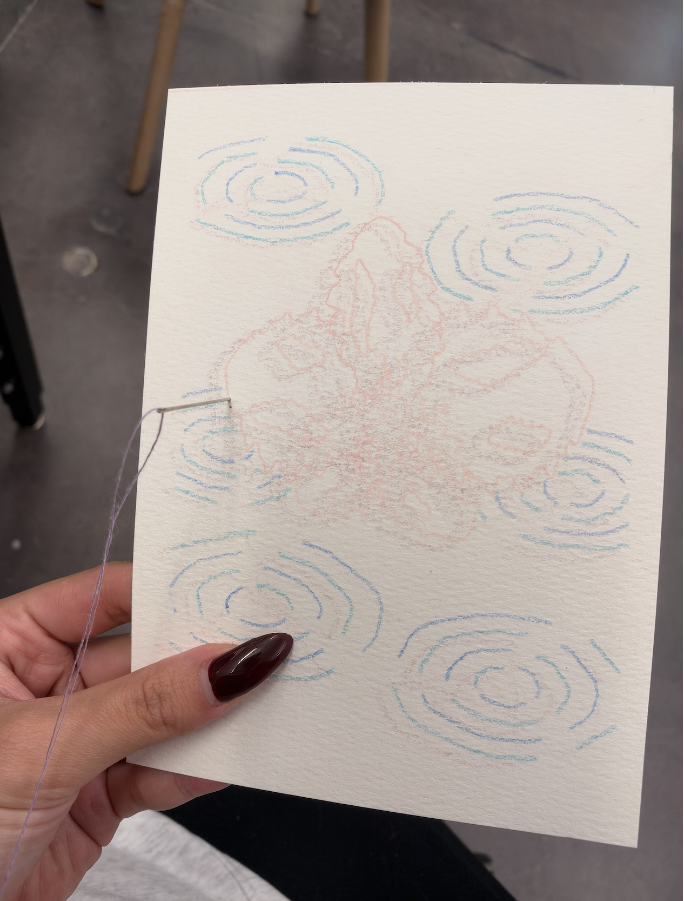
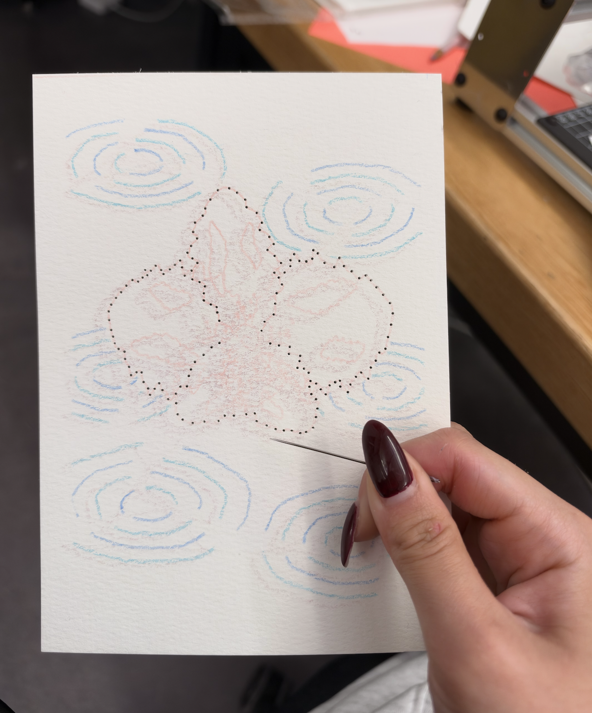
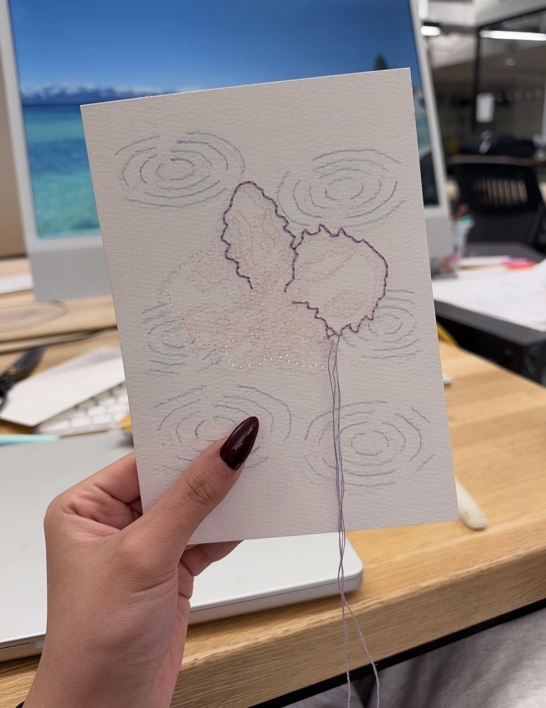
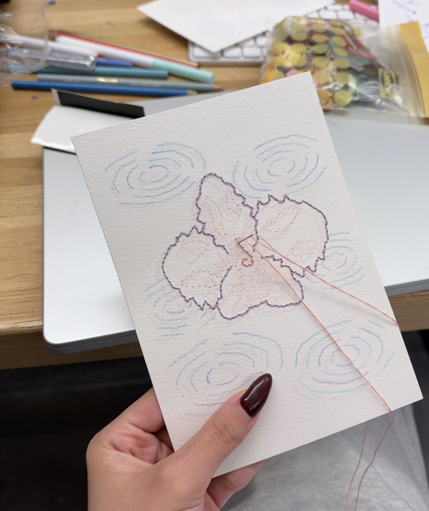
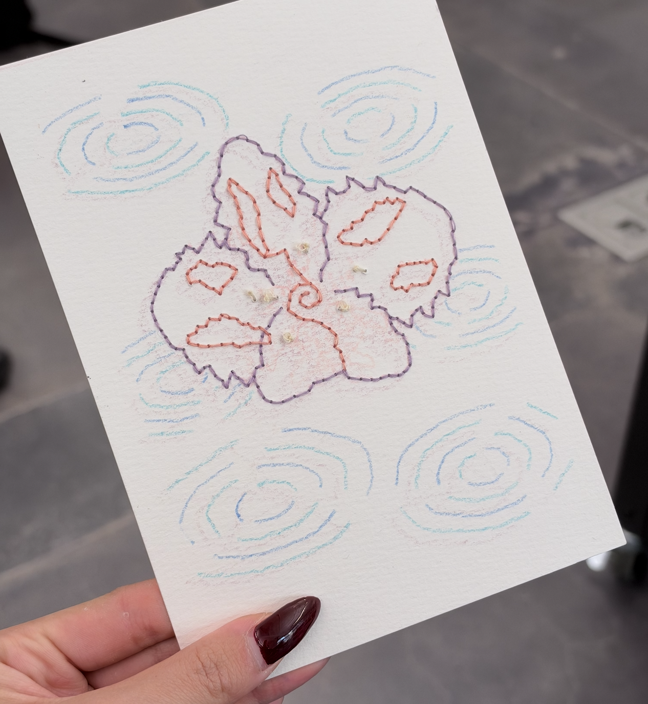
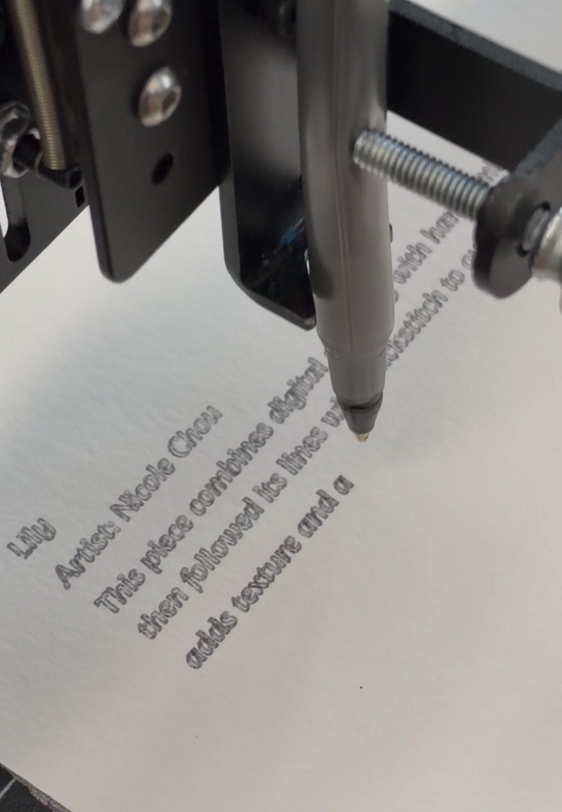
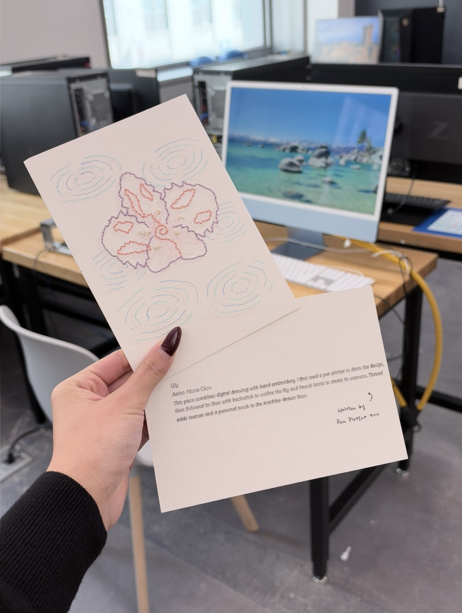
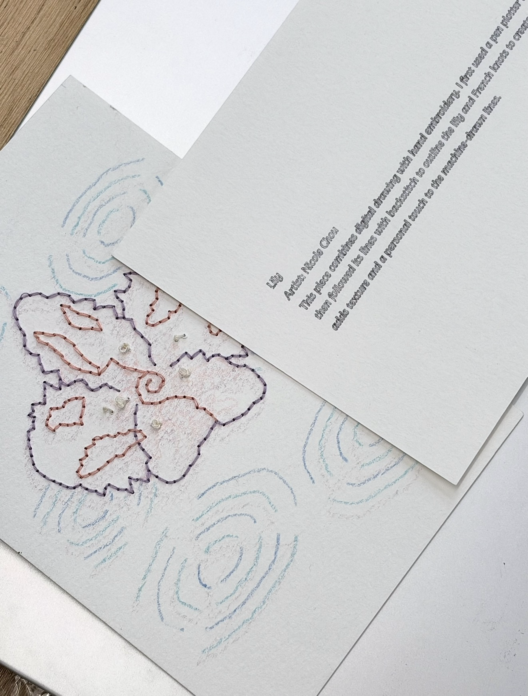

Week 5 Homework 1 — Pen Plotter
1. Inspiration
I started with two images I really liked: a flower outlined in red embroidery and a pattern of blue and white ripples. I wanted to combine these two styles, bringing a lily together with a background of flowing rings.


2. Drawing and Preparing the SVG
I created a line-based composition with a lily as the main subject and repeated ripple patterns in the background. Loops helped build the repeated lines, with variations in size and spacing.
I organized the flower and background into separate layers within one SVG file. I then opened the SVG in Inkscape to check the layout and prepare the layers for plotting.
Previw Drawing3. Plotting in Layers
I used the pen plotter to draw the composition one layer at a time, changing pens between layers.
4. Adding Embroidery
After plotting, I followed the lily's outlines with backstitch and used French knots to create the stamens. The thread added texture and dimension to the drawing, combining the digital process with work done by hand.





5. Plotting the Introduction
I also used the pen plotter to write a short introduction for the piece. This made the accompanying text part of the same process as the drawing.

6. Final Work

